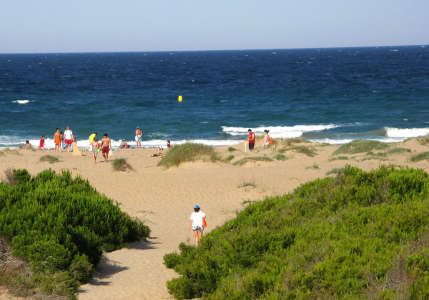

Entre Arenales del Sol y La Marina se pueden encontrar algunas de las playas más bellas y espaciosas de la provincia de Alicante.
Cuenta con una playa de arena fina dorada en una zona de alta belleza, que presenta además un sistema dunar único
Su extensión es de 2.800 metros por 40 metros de ancho. El nivel medio de ocupación es alto. Playa protegida urbana sin paseo marítimo. El estado habitual de la mar es oleaje moderado . Playa con acceso a minusválidos, parking, aseos, duchas, teléfono, alquiler de sombrillas, alquiler de hamacas y tumbonas, deportes náuticos.
Cuenta on una zona náutica de windsurf y patines, un chiringuito, restaurantes y una rampa habilitada para el acceso a embarcaciones. Sus finas arenas y su gran anchura permiten realizar gran variedad de actividades, juegos deportivos, actividades lúdicas y náuticas. Esta playa está dotada de un punto accesible para aquellas personas con movilidad reducida, con todos los equipamientos e infraestructuras necesarios para el disfrute de estos usuarios.
Mas info 


Situada en la zona más céntrica del municipio y con una amplia gama de servicios e infraestructuras, además cuenta con una gran oferta de juegos infantiles y deportivos para hacer el reposo lo más agradable posible. Esta playa está dotada de un punto accesible para aquellas personas con movilidad reducida, con todos los equipamientos e infraestructuras necesarios para el disfrute de estos usuarios.Playa galardonada con el distintivo Bandera Azul 2011.
Mas info 


Son calas de arena intercaladas con zonas rocosas y con limpias aguas de un intenso color azul. Algunas de ellas declaradas de "Interés Turístico Nacional"
Mas info
Dispone de todos los servicios de las playas urbanas y de zona náutica de patines. Playa galardonada con el distintivo Bandera Azul 2011.
Mas info 
de todos los servicios de las playas urbanas. Playa galardonada con el distintivo Bandera Azul 2011.
Mas infoServicios: Dispone de todos los servicios de las playas urbanas. En esta playa se celebró el Campeonato del Mundo de Fórmula Windsurf 2009.
Es una playa de arena fina dorada, abierta y virgen que ofrece unas limpias y azules aguas. Su entorno está marcado por una importante franja de dunas que le dan una atractiva imagen de playa natural.